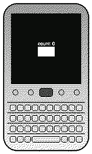

ANDROID 6 ON QNX
Marshmallow apps on the BlackBerry Classic (Q20).
Road so far, what I'm on now, and what's left.
- ART 6.0.1 on QNXruntime compiles, links, runs on armle
- libjavacorecore Java natives registered on device
- dex2oat on deviceQuick ARM compiler ported to the phone
- Boot image built on device13 dex Marshmallow boot classpath
- GC crash fixedcard table bug in upstream ART, patched
- Hello from ART 6 on QNX!compiled and interpreted, both pass
- Root that survives rebootspersistent uid 0 SSH on the Classic
- APK ladder A1 to A5Prober APK passes 7/7 self test
- A6 Activity lifecycleonCreate to onResume, 720x720 layout
- A7 pixels on the panelreal View tree, my own compositor
- A8 live loop + touchredraws and taps on the real screen
- A9 AOSP Calculatorunmodified stock app, running live
- Skia + perf passstock Skia CPU backend, O2 runtime
- NotePad on Holostock SQLite, ContentProvider works
- N2 activity stackback stack, startActivity between screens
- Menus groundworkEventLog natives so menu picks work
- Skia everywherestock Bitmap, NinePatch, Matrix natives in
- Perf epicfaster frames for the second port
- Live NotePad on panelwaiting on a compositor redeploy
- Keyboard + trackpadthe Classic's real hardware input
- Menus, dialogs, windowsreal Android windows on QNX
- Smooth scrolling50 notes, no stutter
- Services + default UIAndroid UI boots as the main shell
- Process model + zygoteproper app processes, shared memory
- Binder + securityminimal Android stack, hardened
GOAL: Signal on the Classicreal Android apps as a daily driver on a keyboard BlackBerry